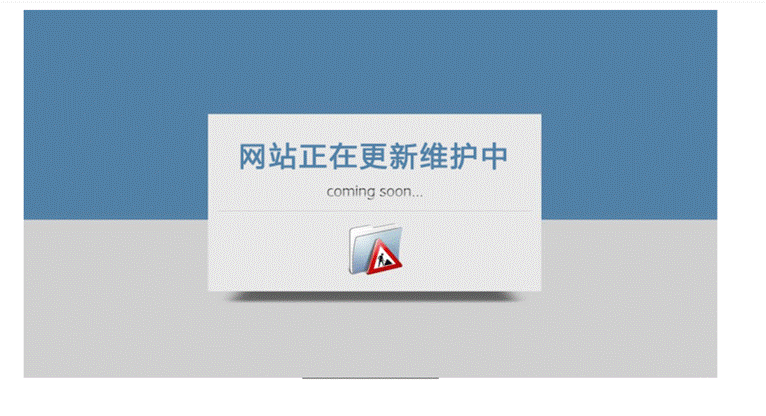
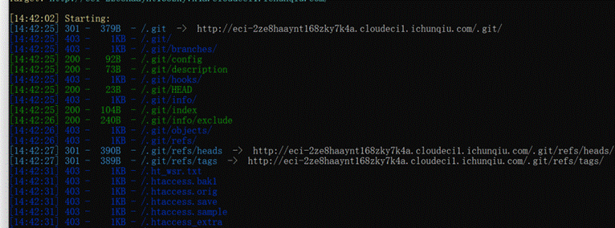
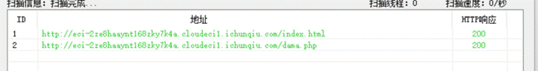
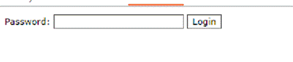
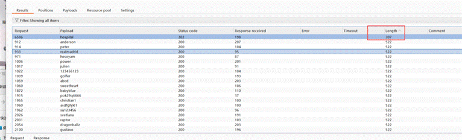
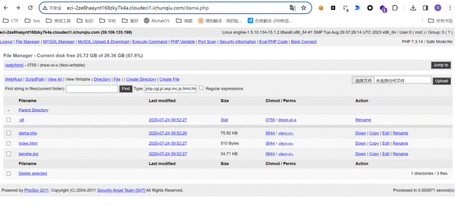
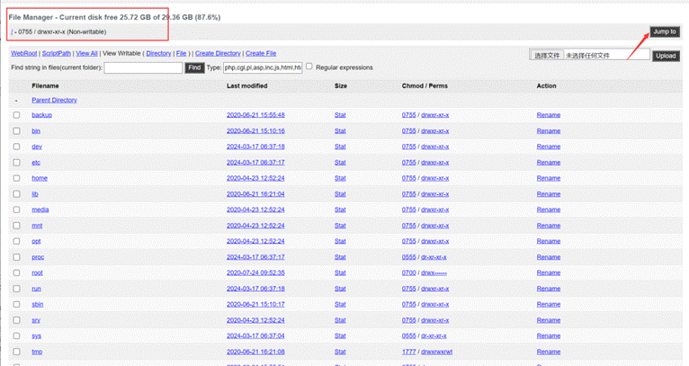
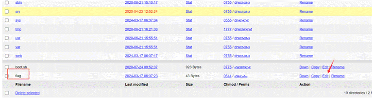

目录扫描
使用扫描工具对目标进行目录扫描，发现文件结构：

扫描结果暴露出后台文件和敏感路径：

发现 dama.php 后门
扫描结果中发现 dama.php（一句话木马后门文件）：

尝试直接打开 dama.php，需要密码验证：

爆破 / 307 跳转绕过
对密码进行爆破尝试，期间遇到 307 跳转（需要跟进或绕过重定向）：

登录后台获 Root 权限
成功爆破后登录后台：

后台中发现 root 用户（最高权限）：

系统目录遍历获取 Flag
利用 root 权限导航到系统根目录：

最终在系统目录中找到 flag 文件并获取 flag。